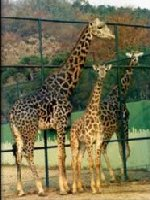

 반추동물로 초원이나 반사막지대에서 서식한다. 주로 나뭇잎과 작은 나무가지를 먹으며 갈증에 대한 저항성이 강하고 현존하는 동물중 가장 키가 크다. 시각이 발달되어 있고 신경이 예민하여 조그마한 일이나 변화에도 잘 놀란다. (특히 암컷은 겁이 많다.) 한 마리의 수컷과 2~3두의 암컷이 무리를 지어서 생활한다.
♣ 마사이 기린과 아미메 기린의 비교
♣ 기린은 일부 다처제의 습성을 지녔는데 암컷을 차지하기 위한 수컷들의 싸움은 매우 격렬하기로 이름나 있으며 이 때의 싸움을 목겨루기(necking)이라고 한다. 기린의 넥킹은 각각 어깨를 맞추고 같은 방향으로 선 두마리의 기린이 큰 원을 그리며 목을 번갈아 부딪치는 것으로 이때 뒤로 물러서는 쪽이 지게 되는 것이다.